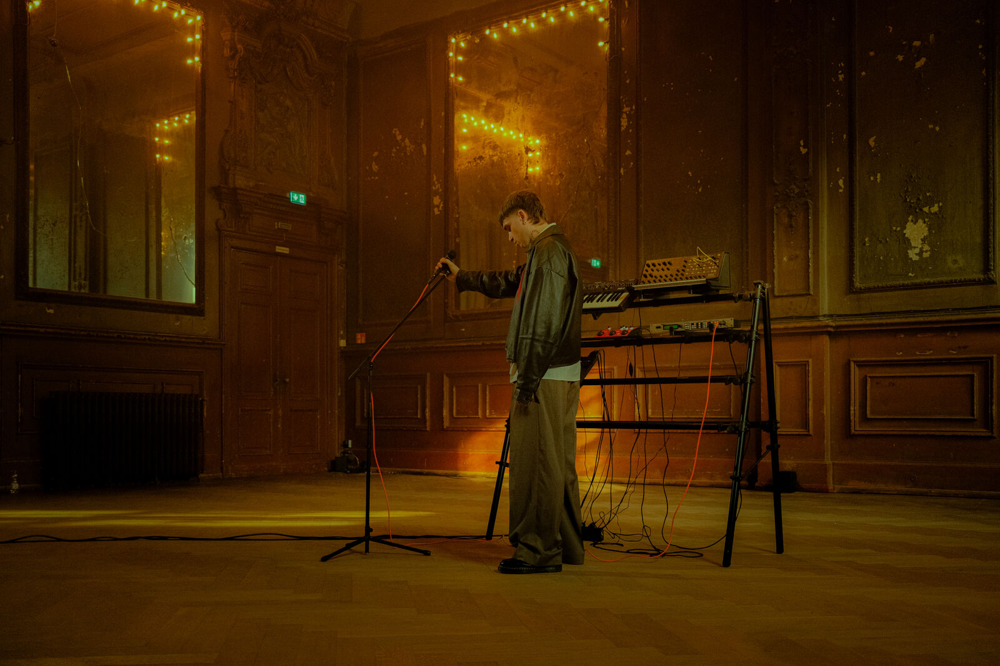
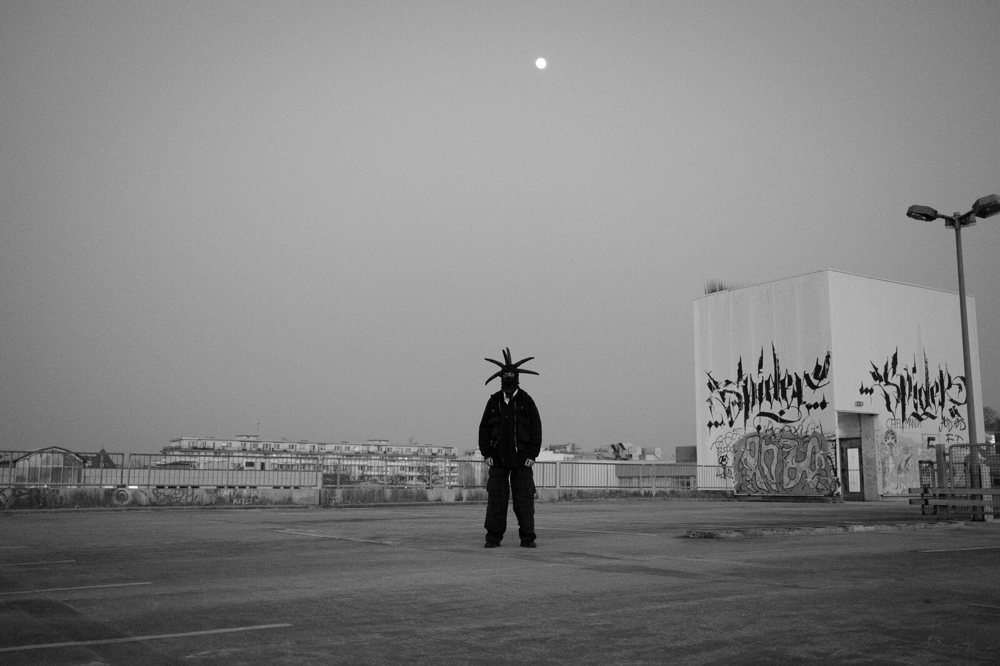
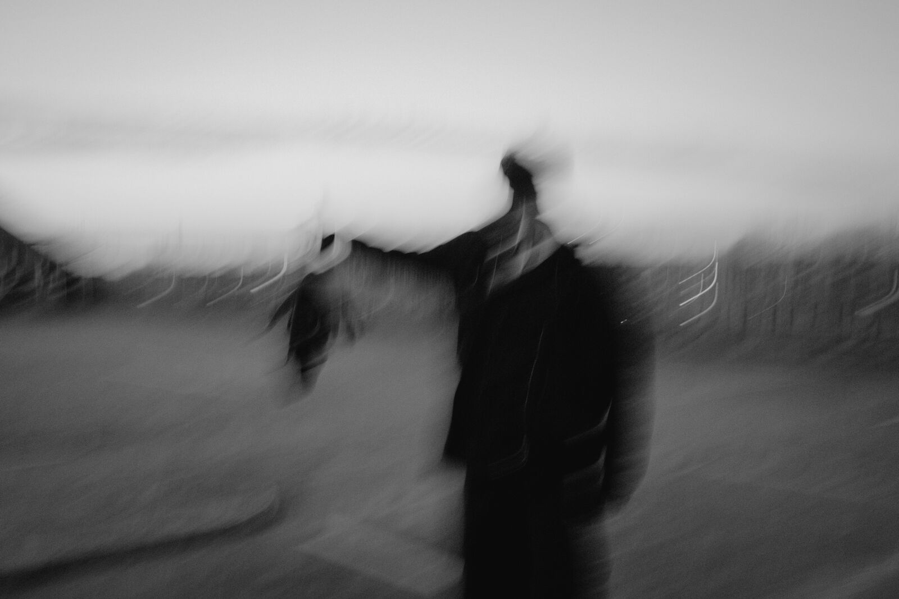

About
the world, the sound, and everything press & bookers need.
An old soul speaking from inside a modern body.
ALIVEMAEX makes New Electronic Psychedelia — a warm, analog world between 70s memories, Berlin underground rhythm, intimate vocals and the modern nervous system. It lives somewhere between 70s psychedelia, post-punk melancholy and dark bedroom-pop intimacy. The songs feel like old photographs that started breathing again — soft around the edges, slightly damaged, full of longing.
At the center is the human need for connection: the way we protect ourselves, the way we hide, the way we still hope someone sees through it. Built around one principle — liebe über angst, love over fear — the project explores shame, longing, self-protection and closeness. Not nostalgia. An old soul, speaking from inside a modern body.
The sound of ALIVEMAEX is dry, close and analog. Dark vocals sit in broken echo rooms. Drums stay physical and direct. Synths and guitars drift through tape, slapback, phaser and warm imperfections. Nothing is polished until it loses its skin. The music moves like a night drive through Berlin after summer rain — electronic, psychedelic, intimate, slightly unstable, but always human. No plastic. No clean escape. Only warmth, friction and the feeling of something real trying to come through.


